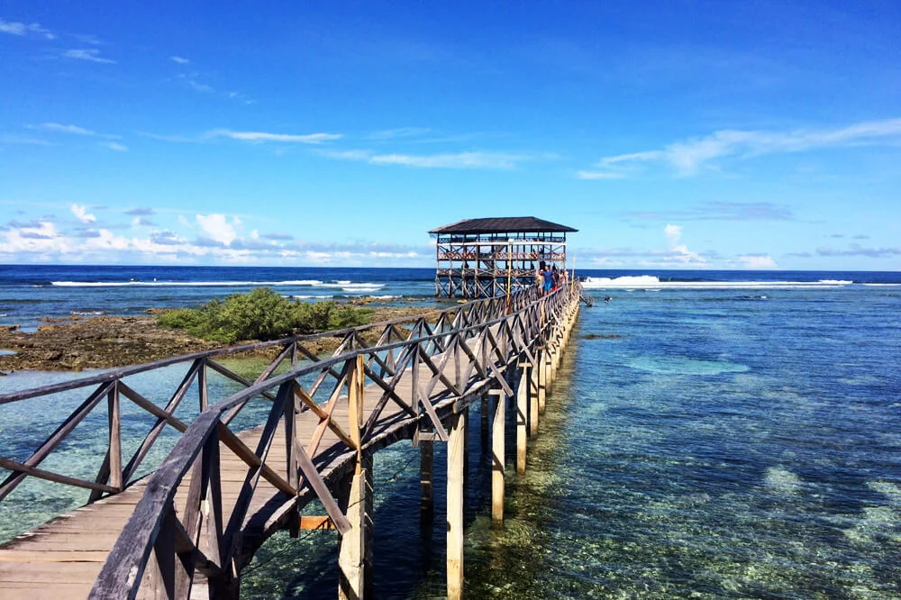
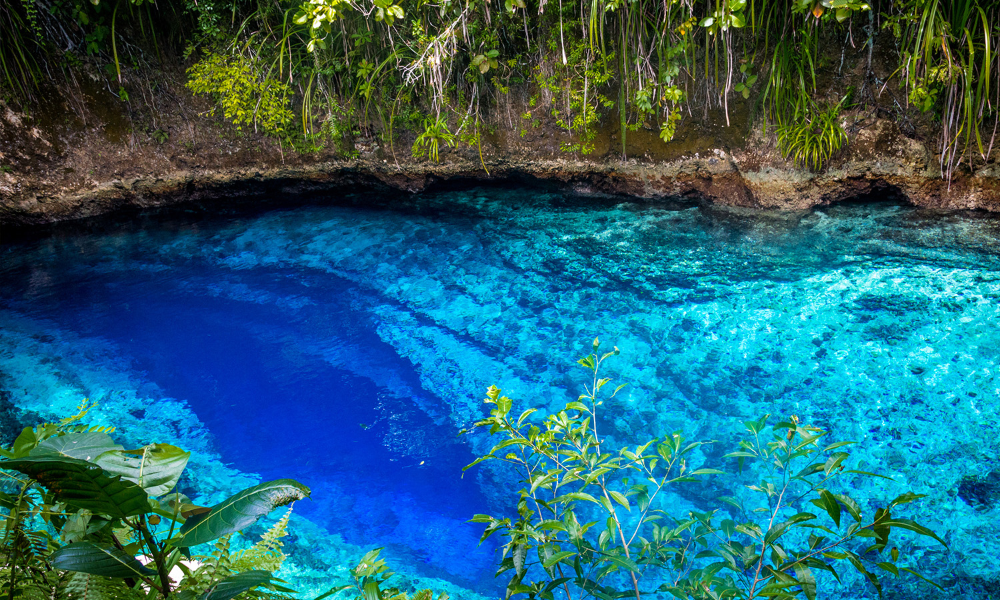
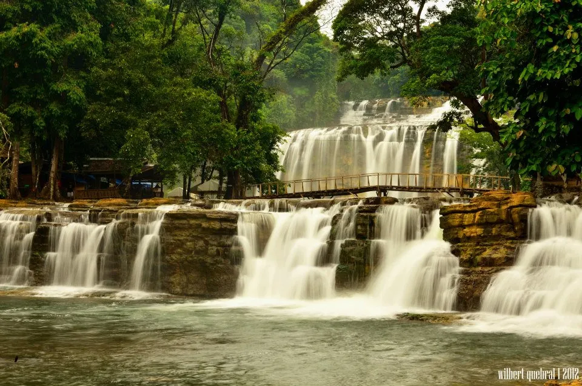
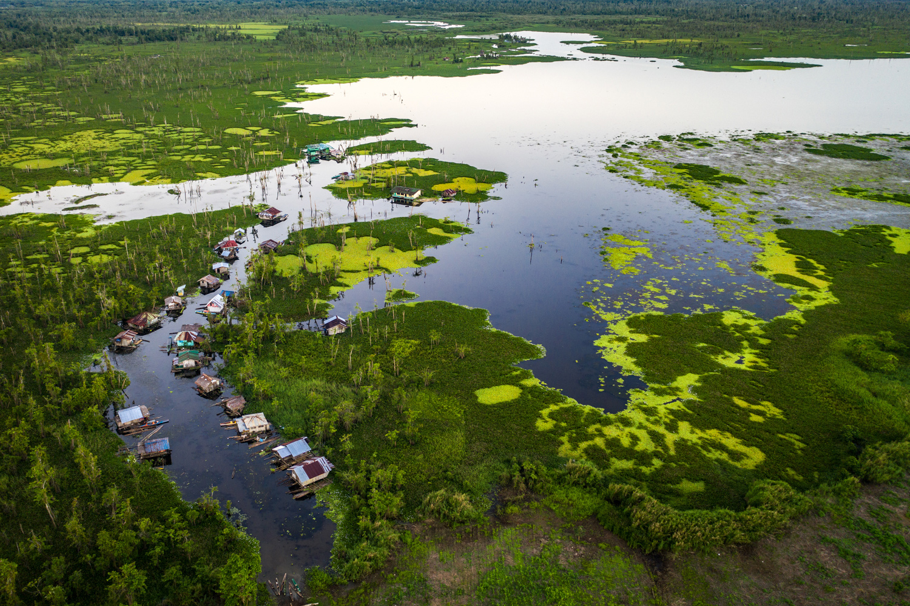
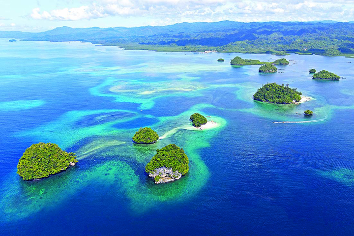
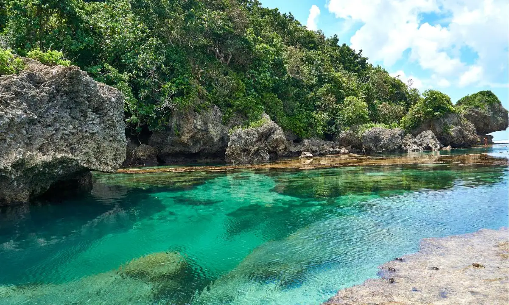

Top Tourist Spots
From surfing paradises to mystical rivers — Caraga's natural wonders await your discovery.

Surigao del NorteSiargao — Cloud 9
The surfing capital of the Philippines. Cloud 9's world-renowned hollow reef break draws international surfers yearly.
View Details →
Surigao del SurEnchanted River
Hinatuan's deep-blue river fed by a mysterious underwater cave system with a magical noon fish-feeding ritual.
View Details →
Surigao del SurTinuy-an Falls
The "Niagara Falls of the Philippines" — a 95-metre wide, three-tiered waterfall set inside tropical rainforest.
View Details → Surigao del Norte
Surigao del Norte
Sugba Lagoon
A crystal-clear emerald lagoon on Siargao Island, framed by mangroves — accessible only by boat, perfect for kayaking.
View Details →
Agusan del SurAgusan Marsh Wildlife Sanctuary
A Ramsar wetland covering 14,000+ hectares. Home to freshwater crocodiles and floating Manobo communities.
View Details →
Surigao del SurBritania Islands
A cluster of 24 pristine islets off San Agustin with powdery white sand and emerald waters perfect for island hopping.
View Details → Surigao del Norte
Surigao del Norte
Magpupungko Rock Pools
Natural tidal rock pools on Siargao Island that transform into crystal-clear swimming pools at low tide.
View Details →
Dinagat IslandsSohoton Cove, Dinagat
Cathedral rock formations, narrow tidal passages, bioluminescent plankton, and swimming with non-stinging jellyfish.
View Details → Agusan del Sur / Surigao Norte
Agusan del Sur / Surigao Norte
Lake Mainit
The fourth-largest lake in the Philippines — known for freshwater sardines and a lush mountain backdrop.
View Details →